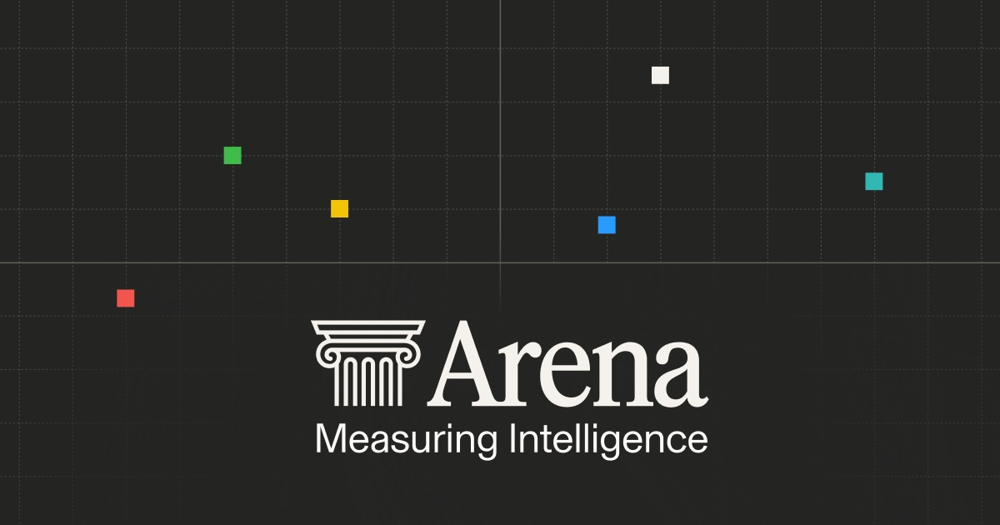

Executive Summary
A company that tests AI models has been given a price of $400 million. Vals AI closed a $40 million Series A led by a16z on August 13. What it sells is neither a model nor the data to train one. It sells exams built from the actual work done in law, finance, healthcare and software, along with the machinery that grades the answers against an expert standard.
Behind that price is a collapse of trust in public benchmarks. Researchers at ETH Zurich and Stanford analyzed 60 widely used language model benchmarks and found that in 29 of them the top models could no longer be told apart. The interesting part is the prescription. The same paper reported that the private test sets the industry has been offering as the cure did not stop saturation. What held up was questions written by experts.
So this round reads less as one benchmark's success story and more as a signal that the work of rewriting the scorecard has been priced. For an organization bringing agents inside, it translates into a single question. Forget the vendor leaderboard: do you have an exam built from your own work?
Key Figures
Sources: a16z (2026-08-13), arXiv:2602.16763 §5, Tech Times (2026-08-14)
$400M
Vals AI valuation
The amount raised was $40 million, a different figure from the valuation
29 of 60
Public benchmarks that lost their edge
Rated highly saturated or worse, and 14 of those fell into the extreme band
52%
Top accuracy on real finance tasks
On Finance Agent v2 as of May 2026, meaning about half of the analyst work still failed
8x
Revenue growth in 2025
Customers doubled over the same period, and the team has tripled in the past six months
Turning Real Work Into Exams
What separates this company from other benchmarks is who writes the questions. Vals AI works with lawyers, financial analysts, software engineers and medical professionals to convert their actual working procedures into benchmarks, then attaches an automated system that grades the output against an expert standard. It asks not whether a legal model can pass the bar exam but whether it can actually carry out legal research, whether a finance model can analyze complex documents, and whether a coding model can produce an application that runs.

The difference shows up most clearly in the shape of what gets graded. A typical benchmark checks whether the model picks the right option in a multiple-choice question or emits a particular string. A Vals task is a multi-step piece of analysis. The model has to retrieve the supporting material it needs, synthesize without inventing numbers, and keep reasoning without losing the context. Finance Agent v2, the company's flagship finance benchmark, is built from tasks such as constructing comparable company models and synthesizing sector catalysts into an investment view. As of May 2026 the best model scored 52%. Even a model near the top of the leaderboard failed to finish roughly half of the work of a professional analyst.
How the scorecard is held is also settled. For each benchmark the company splits the data into three layers. Published scores come only from a test set that is always kept private, a public validation set exists separately to show what kind of questions are used, and a larger private validation set is licensed to enterprises. That last layer carries a condition: the company proves statistically that results on the licensed set correlate with results on its own test set. It is the layer built so that a company can apply the same yardstick inside its own walls, and it connects directly to the question at the end of this piece.
Operating speed is part of what the company sells as well. Benchmark results come back within hours of getting model access. In a release cycle where frontier models arrive weekly, an evaluation that reports weeks later is a report card for a model that has already been superseded. Results accumulated this way are cited in model cards from OpenAI, Anthropic, Google, Meta and xAI. When a frontier lab writes an outside evaluator's numbers into its own official documentation, it is lending a piece of its credibility to that methodology.
The Series A that closed on August 13 was $40 million at a $400 million valuation. a16z led the round, existing investors 8VC, Pear VC and Bloomberg Beta returned, and HRT Ventures, the venture arm of Hudson River Trading, joined alongside Next Ladder Ventures as new investors. The founders are CEO Rayan Krishnan and CTO Langston Nashold, Stanford computer science alumni who had been working on measurement problems together before the company existed. Krishnan came through Palantir, and Nashold through Meta, NVIDIA and Hudson River Trading.
Three products arrived with the round: Vals Smith, which turns an internal GitHub repository into a coding benchmark; a frontier risk benchmark covering cybersecurity, mental health and AI safety; and Vals Index 2.0, which widens an index concentrated in finance and coding across the broader economy. Worth reading before the product list is the premise the founder put at the top of the announcement. Trillions have gone into generating intelligence, and comparatively little into measuring it.
Public Exams Grow Old
Why benchmarks became hard to trust has come up on this blog several times. One thread is contamination, where test questions leak into training corpora and the model answers problems it has already seen; another is OpenAI retiring the coding benchmark it had been using itself. What has changed this time is not the mechanism but the fact that the same problem has become a business with a price on it.
The study that measured the scale came out in February 2026. Researchers at ETH Zurich and Stanford analyzed 60 widely used language model benchmarks across 14 saturation-related properties, and 29 of them were rated highly saturated or worse, with 14 in the extreme band. Saturation describes a state where the scores of the leading models compress into measurement noise and stop being distinguishable from one another. The paper was updated in August as the ICML 2026 camera-ready version.
Saturation does not come from contamination alone. Even when not a single question leaks, top-end scores converge simply because labs tune their models against a metric everyone already knows. That is why a16z's announcement listed the failure modes of public datasets in three strands: saturation, leakage into training corpora, and becoming targets that models are explicitly optimized against.
A saturated benchmark does not give you a wrong answer. It gives you no answer. A leaderboard on which the top three models are statistically indistinguishable tells a buyer nothing about which model will do their work better. To borrow the phrasing a16z used in the announcement, a model can look excellent on a leaderboard and still flounder in the multi-step, messy work that actually matters.
Secrecy Was Not the Defense
Evaluation companies mostly give the same answer to contamination. Do not publish the questions. Vals likewise explains that it keeps its test sets private and limits the number of runs to block contamination and abuse. The paper above aims squarely at that prescription. Designs commonly treated as safeguards, such as private test sets or closed-form answer formats, had limited effect on saturation, and the variables that strongly predicted it were the age and the size of the benchmark. Even if the questions have never been published, scores begin to compress the moment it becomes widely known what a benchmark asks and how.
What the paper rejects is not the usefulness of keeping questions private. Contamination and memorization are well-documented risks in their own right, and secrecy does work on those. It simply did not act as a shield against saturation.
Resistance came from a different condition. The paper concludes that resistance to saturation comes from expert curation rather than from whether the data is public, and its practical recommendation runs to benchmark lifecycle management: monitor saturation, report uncertainty alongside scores, and set the criteria for retirement and revision in advance.
What Vals actually does sits close to that recommendation. The company treats benchmarks as consumables. Its own explanation is that a good benchmark is eventually meant to become useless, and once every model approaches a perfect score that exam has done its job, so it is time to build something harder. In May 2026, when the corporate finance benchmark CorpFin stopped separating models, it was replaced with an Excel modeling benchmark. Retired benchmarks are still marked separately on the company's public benchmark list. The uncertainty reporting the paper also recommended appears in the methodology documentation, which states that standard errors are published beside scores and that benchmarks run multiple times derive their error from the variation between runs.
So the asset in question needs a small correction. What carries the price is not the fact that the questions are hidden. It is the ability to bring in domain experts and convert real work into tasks, the operation of discarding a saturated exam and building it again, and a track record of trust deep enough that five frontier labs write the name into their model cards. What a new entrant six months old cannot easily replicate with funding alone is that record, not the questions.
Why Is the Scorekeeper Worth Paying For?
As the stakes rose, so did the cost of choosing wrong. Models are moving from answering questions to getting work done, and agents now run on their own for hours or even days. Pick the wrong model in that regime and the bill does not arrive only as tokens. Time and customer satisfaction drain out with it. That is the backdrop for a16z calling the company a trust layer between models and the people who depend on them.
a16z's logic is simple. When the seller knows far more than the buyer and has an incentive to present itself favorably, the market eventually needs an independent scorekeeper. General partner Jennifer Li placed Moody's and S&P in credit markets, independent auditors for public companies, and UL certification in manufacturing in the same lineage. The diagnosis is that the information asymmetry George Akerlof described through the used car market in 1970 is repeating itself in the market for AI models. A lab knows the true strengths and weaknesses of its model better than the company buying it, and it can choose which benchmarks to publish.
The analogy cuts both ways. Moody's failed badly in 2008, and one cause was the commercial relationship it held with the bond issuers it was rating. Vals charges for the evaluation service itself, which puts it closer to an audit firm than to a rating agency collecting fees from issuers. Whether that distinction survives as the company grows and its relationships with the labs deepen is something to watch. The fact that Hudson River Trading, where a co-founder once worked, is a new investor in this round shows how small the ecosystem still is.
This is not the first time evaluation has been priced. What matters is that each company asks a different question. The table below sets out what three recently funded companies measure and who does the grading. The speed of repricing is striking too. LMArena went from a $600 million valuation in its May 2025 seed round to $1.7 billion seven months later, with annualized revenue of $30 million as of December 2025.

| Company | What it asks | Who grades | Latest round |
|---|---|---|---|
| Vals AI | Can it finish real legal, finance and coding tasks? | Automated grading against a domain expert standard | August 2026 Series A, $40M at a $400M valuation |
| LMArena | Which model do people prefer talking to? | Anonymous user preference votes | January 2026 Series A, $150M at a $1.7B valuation |
| Trismik | Can the same verdict come from fewer questions? | Adaptive testing based on item response theory | September 2025 pre-seed, £2.2M |
Compiled by Pebblous from the a16z announcement and reporting by TechCrunch (2026-01-06) and Tech Times (2026-08-14). LMArena draws more than 5 million users a month, and 60 million conversations a month flow into its leaderboard.
Line the three rounds up and one thing becomes clear. What carries the price is not model performance but the apparatus that judges performance. And that apparatus is not content you build once and sell. It is infrastructure that has to be rebuilt every time the models get better.
Who Writes Your Exam?
The rise of independent evaluators is good news for buyers. An organization that has been judging by vendor-published scores alone gains one more number, from a party whose interests differ. There is something that number cannot do for you, though. In Tech Times' phrasing, no general benchmark, Vals included, replaces testing a model on your own data and your own procedures. What independent evaluation establishes is a trustworthy floor. If a model cannot post stable scores on real-task benchmarks, the numbers on a vendor leaderboard are no reason to trust it.
That leaves the work of measuring your own position on top of that floor. An organization bringing agents inside can check three things.
- Do you have tasks built from your own work? Setting aside vendor demos and public benchmark scores, you can start by counting how many tasks are composed of your documents and your procedures.
- Who set the grading criteria? Unless someone who knows the work writes down the correct answers and the deductions, an automatic grader rewards answers that merely look right. Writing the criteria takes longer than writing the questions.
- Have you set an expiry date for that exam? Once every model you have adopted approaches a perfect score, the exam stops telling you anything. It is better to decide in advance when to retire it and what to replace it with.
Parts of those three questions can be bought outside. Vals Smith, formally released with this round, takes a GitHub repository and builds a coding benchmark fitted to it, and the private validation set described earlier is licensed to enterprises for internal testing. As Tech Times put it, whether a model can write Python and whether it can write your Python are different questions. What still has to be decided inside the organization is what counts as correct and where points come off. The tooling writes the questions for you; it does not set the criteria.
Editor's Note: What Pebblous keeps running into in data quality work looks much the same. Agreeing on what counts as correct takes longer than swapping the model, and scores accumulated without that agreement are hard to reuse later. Real tasks and grading criteria, once built, remain an asset after the model changes.
Earlier pieces along the same line include benchmark contamination on test questions leaking into training data, the retirement of SWE-bench Verified on how a single benchmark reaches the end of its life, and why AI pilots fail on internal pilots that never reach production. The investment announcement is at a16z, and the saturation study is at arXiv:2602.16763.